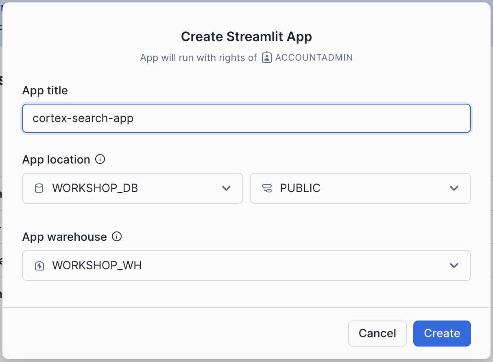
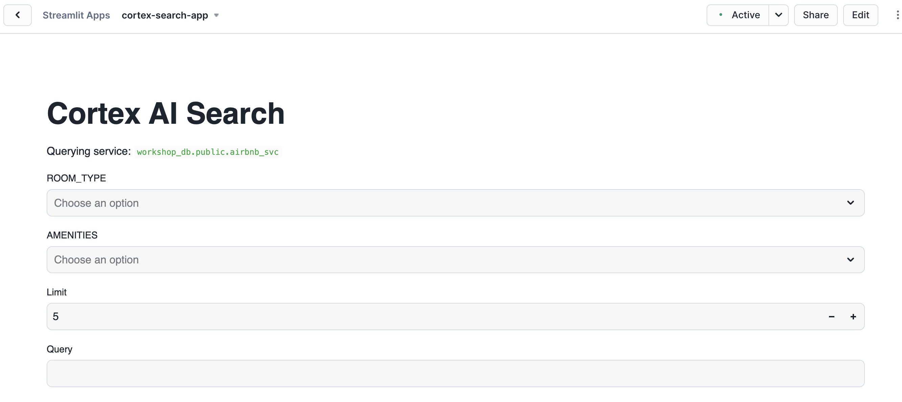

⏱️ Module Overview
Estimated time: 15 minutes
In this module, you'll learn how to:
- Parse PDF documents using Snowflake's native Document AI
- Split documents into searchable chunks
- Create a Cortex Search service for semantic search
Step 1: Parse PDF Documents
We'll use SNOWFLAKE.CORTEX.PARSE_DOCUMENT() to extract text from our FOMC meeting minutes PDFs.
USE DATABASE WORKSHOP_DB;
USE SCHEMA PUBLIC;
USE WAREHOUSE WORKSHOP_WH;
-- Create a table to store parsed document content
CREATE OR REPLACE TABLE FOMC_DOCUMENTS_RAW (
FILE_NAME VARCHAR,
FILE_URL VARCHAR,
PARSED_CONTENT VARIANT,
EXTRACTED_TEXT VARCHAR,
PARSED_AT TIMESTAMP_NTZ DEFAULT CURRENT_TIMESTAMP()
);
-- Parse all PDFs using Document AI
INSERT INTO FOMC_DOCUMENTS_RAW (FILE_NAME, FILE_URL, PARSED_CONTENT, EXTRACTED_TEXT)
SELECT
METADATA$FILENAME AS FILE_NAME,
BUILD_SCOPED_FILE_URL(@FOMC_DOCS, METADATA$FILENAME) AS FILE_URL,
SNOWFLAKE.CORTEX.PARSE_DOCUMENT(
@FOMC_DOCS,
METADATA$FILENAME,
{'mode': 'LAYOUT'}
) AS PARSED_CONTENT,
SNOWFLAKE.CORTEX.PARSE_DOCUMENT(
@FOMC_DOCS,
METADATA$FILENAME,
{'mode': 'LAYOUT'}
):content::VARCHAR AS EXTRACTED_TEXT
FROM @FOMC_DOCS
WHERE METADATA$FILENAME LIKE '%.pdf';Verify the Results
-- Check what was extracted
SELECT
FILE_NAME,
LENGTH(EXTRACTED_TEXT) AS TEXT_LENGTH,
LEFT(EXTRACTED_TEXT, 300) AS TEXT_PREVIEW
FROM FOMC_DOCUMENTS_RAW
LIMIT 3;Step 2: Create Document Chunks
Large documents need to be split into smaller "chunks" for effective search. Each chunk should be small enough to be meaningful but large enough to contain useful context.
-- Create a function to split text into chunks
CREATE OR REPLACE FUNCTION CHUNK_TEXT(
input_text VARCHAR,
chunk_size INT DEFAULT 2000,
chunk_overlap INT DEFAULT 300
)
RETURNS TABLE (
chunk_index INT,
chunk_text VARCHAR
)
LANGUAGE SQL AS
$$
WITH RECURSIVE chunks AS (
SELECT
0 AS chunk_index,
SUBSTRING(input_text, 1, chunk_size) AS chunk_text,
chunk_size - chunk_overlap AS next_start
UNION ALL
SELECT
chunk_index + 1,
SUBSTRING(input_text, next_start + 1, chunk_size),
next_start + chunk_size - chunk_overlap
FROM chunks
WHERE next_start < LENGTH(input_text) AND chunk_index < 1000
)
SELECT chunk_index, chunk_text
FROM chunks
WHERE LENGTH(chunk_text) > 100
$$;Create the Chunks Table
-- Generate chunks for all documents
CREATE OR REPLACE TABLE FOMC_DOCS_CHUNKS AS
SELECT
d.FILE_NAME,
d.FILE_URL,
c.CHUNK_INDEX,
d.FILE_NAME || ': ' || c.CHUNK_TEXT AS CHUNK,
'English' AS LANGUAGE,
TRY_TO_DATE(
REGEXP_SUBSTR(d.FILE_NAME, '\\d{4}-\\d{2}-\\d{2}'),
'YYYY-MM-DD'
) AS MEETING_DATE
FROM FOMC_DOCUMENTS_RAW d,
TABLE(CHUNK_TEXT(d.EXTRACTED_TEXT, 2000, 300)) c;
-- Check the results
SELECT
FILE_NAME,
COUNT(*) AS NUM_CHUNKS,
AVG(LENGTH(CHUNK)) AS AVG_CHUNK_LENGTH
FROM FOMC_DOCS_CHUNKS
GROUP BY FILE_NAME
ORDER BY FILE_NAME;Step 3: Create Cortex Search Service
Now we'll create a Cortex Search Service that enables semantic search over our document chunks.
-- Create the Cortex Search service
CREATE OR REPLACE CORTEX SEARCH SERVICE FOMC_SEARCH_SERVICE
ON CHUNK
ATTRIBUTES LANGUAGE, MEETING_DATE
WAREHOUSE = WORKSHOP_WH
TARGET_LAG = '1 hour'
AS (
SELECT
CHUNK,
FILE_NAME,
FILE_URL,
CHUNK_INDEX,
LANGUAGE,
MEETING_DATE
FROM FOMC_DOCS_CHUNKS
);Step 4: Create a Search Helper Function
Create a convenient function to search our documents:
-- Create a helper function for searching
CREATE OR REPLACE FUNCTION SEARCH_FOMC_DOCS(
query_text VARCHAR,
num_results INT DEFAULT 5
)
RETURNS TABLE (
chunk VARCHAR,
file_name VARCHAR,
meeting_date DATE,
relevance_score FLOAT
)
LANGUAGE SQL AS
$$
SELECT
result:CHUNK::VARCHAR AS chunk,
result:FILE_NAME::VARCHAR AS file_name,
result:MEETING_DATE::DATE AS meeting_date,
result:_score::FLOAT AS relevance_score
FROM (
SELECT VALUE AS result
FROM TABLE(
SNOWFLAKE.CORTEX.SEARCH_PREVIEW(
'FOMC_SEARCH_SERVICE',
OBJECT_CONSTRUCT(
'query', query_text,
'columns', ARRAY_CONSTRUCT('CHUNK', 'FILE_NAME', 'MEETING_DATE'),
'limit', num_results
)::VARCHAR
)
)
)
$$;Step 5: Test the Search
Let's try some searches!
-- Test: Search for inflation-related content
SELECT * FROM TABLE(SEARCH_FOMC_DOCS('inflation expectations', 3));
-- Test: Search for interest rate decisions
SELECT * FROM TABLE(SEARCH_FOMC_DOCS('interest rate decisions', 3));
-- Test: Search for employment outlook
SELECT * FROM TABLE(SEARCH_FOMC_DOCS('labor market employment', 3));Step 6: Test with a Streamlit App (Optional)
You can create a simple Streamlit app to test your Cortex Search service interactively:
- In Snowsight, click Projects → Streamlit
- Click + Streamlit App
- Name it
cortex-search-app - Select database
WORKSHOP_DBand schemaPUBLIC

Creating a Streamlit app to test Cortex Search
Once created, you can build a simple search interface to query your documents:

The Cortex AI Search app with filter options and query input
🎉 Module Complete!
You've successfully built a document search system with:
- ✅ Parsed PDF documents using Document AI
- ✅ Split documents into searchable chunks
- ✅ Created a Cortex Search service
- ✅ Built a helper function for easy searching
In the next module, we'll set up Cortex Analyst to query structured revenue data using natural language.